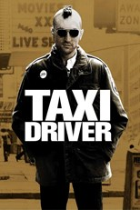

Dimitri Heidet
J'ai un projet, je ne suis pas au chômage!!
After 12 years in financial position in Industry, I got bored and launched 36 Quai Des Arômes. Our mission: bring wine tasting skills by playing.
Mon Beau ProjetMy Favorite Movies
It's A Wonderful LifeLe décès de son père oblige un homme à reprendre l'entreprise familiale de prêts à la construction, qui permet aux plus déshérités de se loger. Il entre en conflit avec l'homme le plus riche de la ville, qui tente de ruiner ses efforts. Au moment où il approche de la victoire, il égare les 8 000 dollars qu'il devait déposer en banque. Le soir de Noël, désespéré, il songe au suicide. C'est alors que le Ciel dépêche à ses côtés un ange de seconde classe, qui pour gagner ses ailes devra l'aider à sortir de cette mauvaise passe... |
|

|
Singing In The RainDon Lockwood et Lina Lemont forment le couple star du cinéma muet à Hollywood. Quand le premier film parlant sort, tous deux doivent s’accommoder et tournent leur premier film du genre. Si Don maîtrise l'exercice, la voix désagréable de Lina menace le duo. Kathy, une chanteuse, est engagée pour doubler la jeune femme mais celle-ci devient un obstacle entre Don et Lina ce qui n'est pas du goût de cette dernière. |
|  |
Taxi DriverVétéran de la Guerre du Vietnam, Travis Bickle est chauffeur de taxi dans la ville de New York. Ses rencontres nocturnes et la violence quotidienne dont il est témoin lui font peu à peu perdre la tête. Il se charge bientôt de délivrer une prostituée mineure de ses souteneurs. |